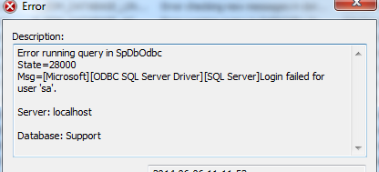
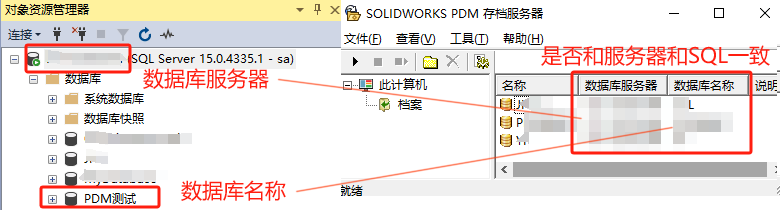
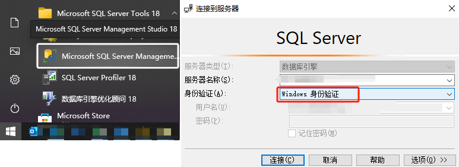
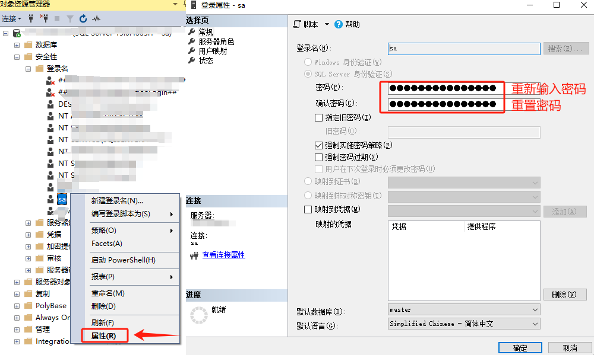
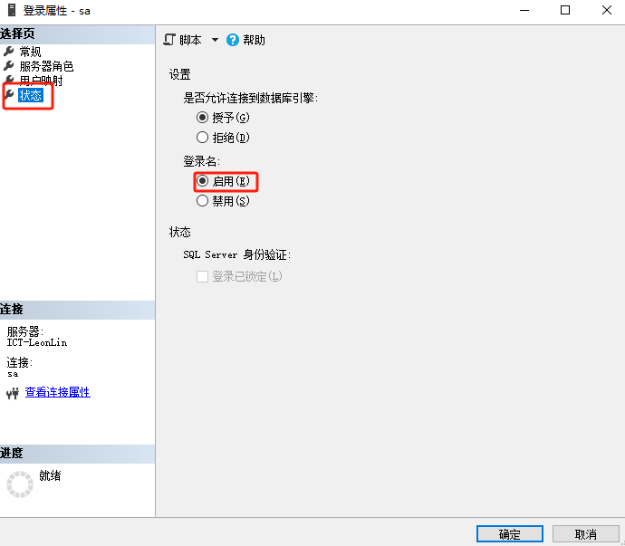
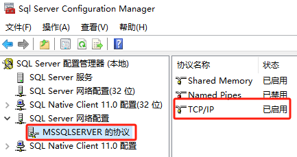

sa登录失败
通过 SOL Management Studio 登录 SOL Server 时，是什么原因导致出现错误”用户’sa”登录失败。(Microsoft SOL Server，错误:18456)”
这将会影响登录时，出现：无法访问数据库中的项目
故障排除步骤如下：
方法1
确保您已在”服务器名称“字段中输入了正确的 SOL服务器实例名称。
如果是默认 SOL实例，请使用<主机名>\如果是命名实例，则使用<主机名>\<实例名称>。例如“SERVER52\SQL”。
方法2
如果无法解析主机名，请尝试使用服务器的 IP 地址。
方法3
确保输入正确的“sa“用户密码。
如果无法通过”SOLServer 身份验证”进行连接请以本地管理员身份登录到 SOL Server 系统，然后尝试通过“windows 身份验证’登录。
随后，您可以转至“sa“登录的安全设置，然后重置密码，
同时还请确保“sa帐户未被禁用。
方法4
确保已为 SOL 实例启用 TCP 协议。在 SOL Server 上运行 SOL配置管理器，
并确认该实例在“SOL Server 服务”下运行。在“SOL Server 网络配置”下验证”TCP/IP“是否启用)
